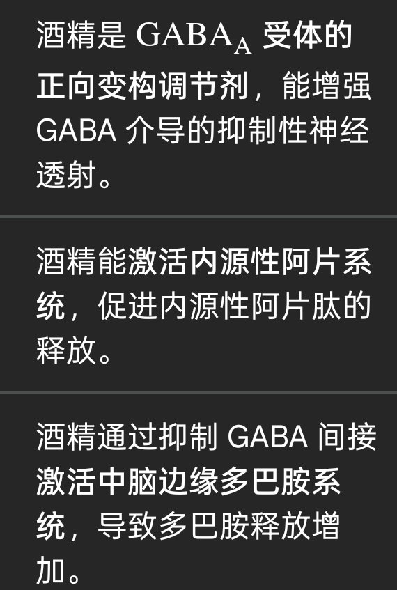

RT @ivan20221126: 显而易见的是，酒精和烟草符合“毒品”的一切定义，首当其冲的就是成瘾性，酒瘾严重能致死，而烟草更是难以戒除。如从给人带来快乐来说，无论是悠久的酒精带来的阿片能，GABA还是烟草的烟碱乙酰胆碱，多巴胺，他们都具有让人“嗨”的能力。
所以，对毒品，…

所以，对毒品，…

显而易见的是，酒精和烟草符合“毒品”的一切定义，首当其冲的就是成瘾性，酒瘾严重能致死，而烟草更是难以戒除。如从给人带来快乐来说，无论是悠久的酒精带来的阿片能，GABA还是烟草的烟碱乙酰胆碱，多巴胺，他们都具有让人“嗨”的能力。
所以，对毒品，非列管成瘾性物质，合法成瘾物的区分是完全的暴政 https://t.co/RtRKlascPX https://t.co/EjbBWOAr0h
所以，对毒品，非列管成瘾性物质，合法成瘾物的区分是完全的暴政 https://t.co/RtRKlascPX https://t.co/EjbBWOAr0h